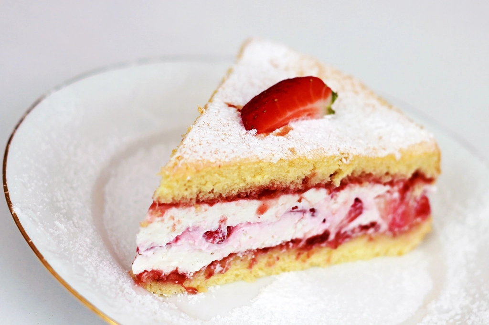
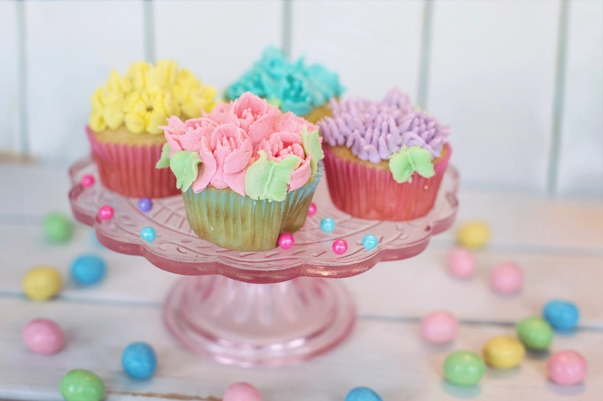
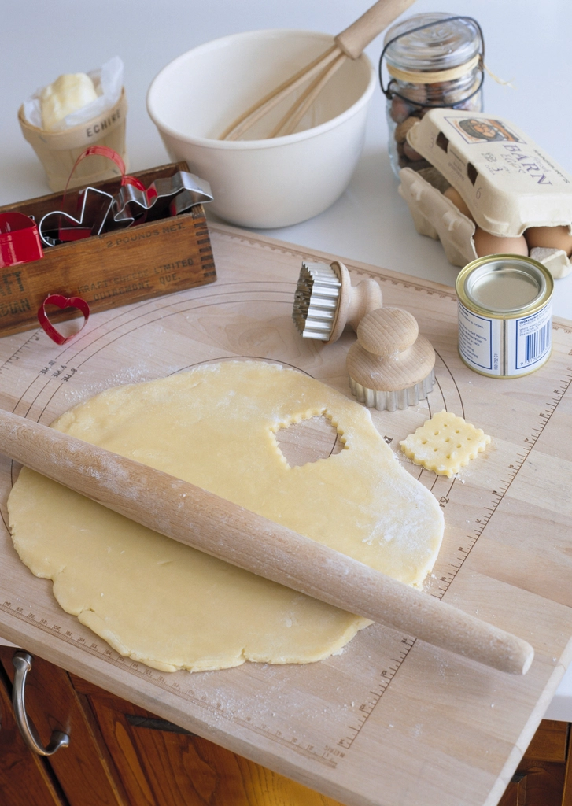
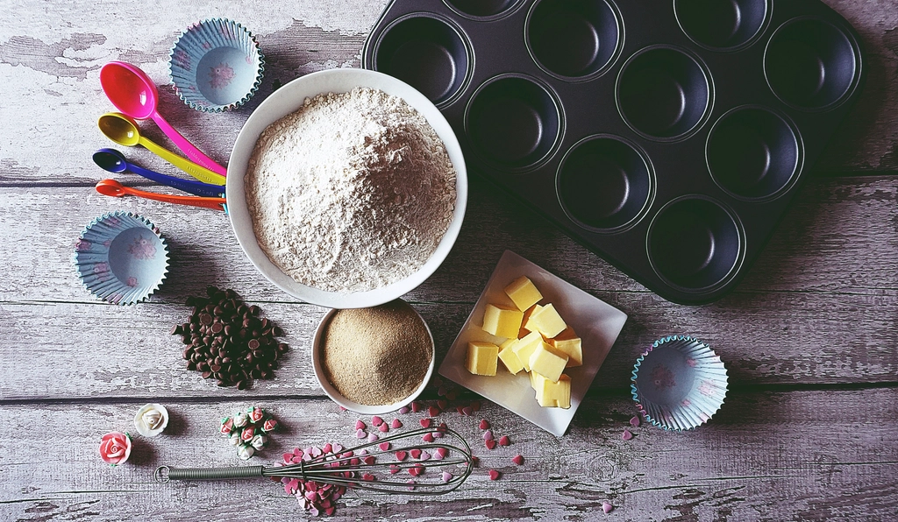
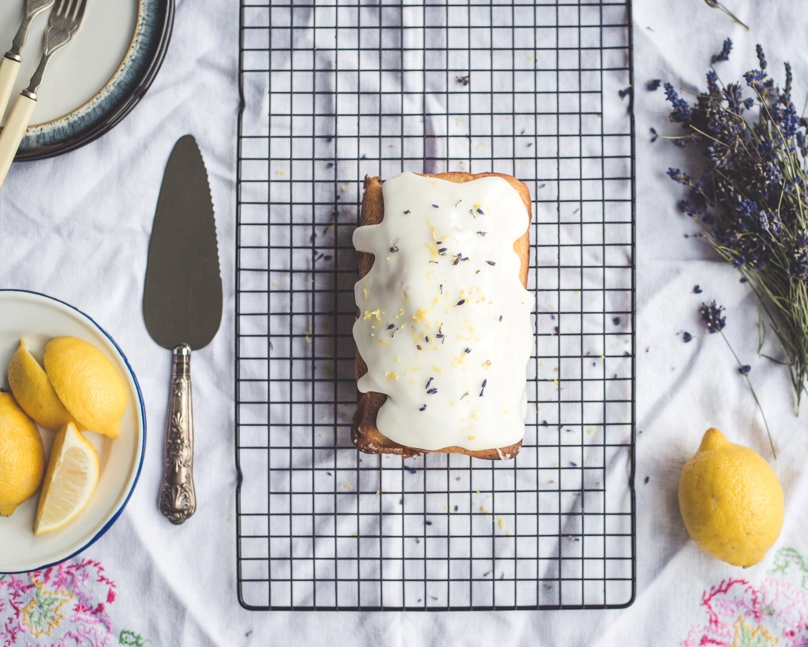
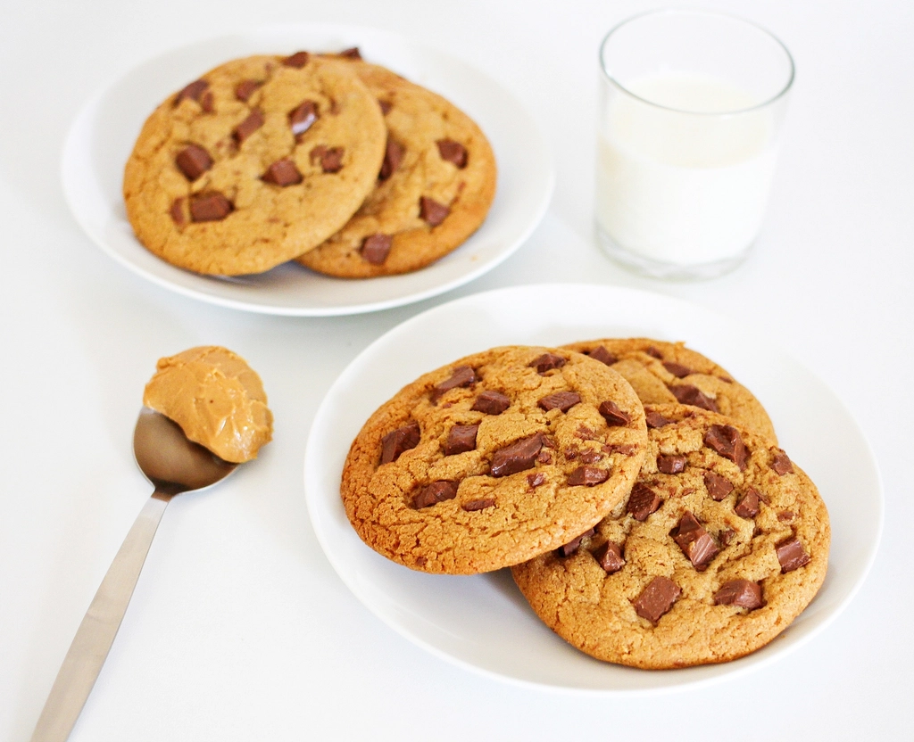
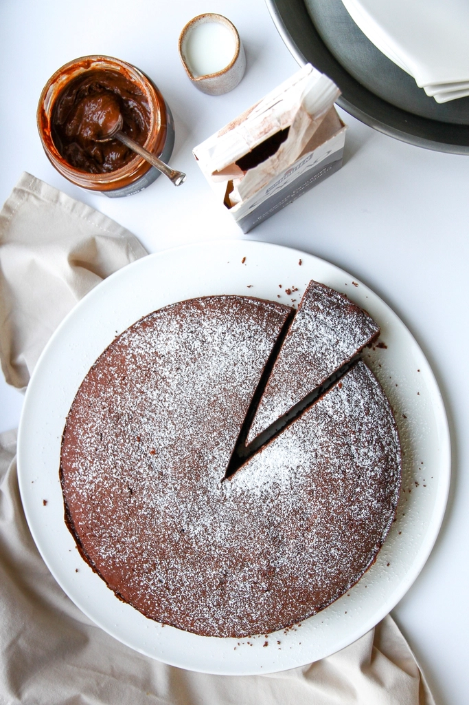

100 gâteaux simples et gourmands à réaliser chez soi


Ce livre, je l'ai écrit pour celles et ceux qui pensent qu'ils ne savent pas faire de gâteaux.
Pas de technique de chef, pas d'ingrédient introuvable, pas de robot hors de prix : un saladier, un fouet, un four, et des produits que l'on trouve dans n'importe quel supermarché.
Chaque recette tient sur une page. Les quantités sont précises, les étapes sont courtes et expliquées simplement, et vous trouverez toujours une petite astuce pour éviter les pièges.
Certaines recettes viennent de ma famille, d'autres de copines, d'autres encore de mes essais (parfois ratés) du dimanche après-midi. Toutes ont été refaites jusqu'à ce qu'elles marchent à tous les coups.
Bonne pâtisserie !
La préparation, c'est le temps où vous êtes aux fourneaux. Le repos et la cuisson, c'est du temps libre : on en profite pour ranger… ou pas.
Le pictogramme « Petites mains » signale les étapes que les enfants peuvent faire seuls. Le four et les couteaux restent l'affaire des grands.

Pas besoin d'ustensiles de professionnel. Vous avez sûrement déjà presque tout dans vos placards : cochez au fur et à mesure.
Un batteur électrique fait gagner du temps pour les blancs en neige et la chantilly. Un moule à muffins et quelques emporte-pièces ouvrent la porte à plein d'autres recettes. Mais rien de tout ça n'est obligatoire.

Huit habitudes toutes simples. Elles font la différence entre un gâteau « pas mal » et celui qu'on vous redemande.
Avant de commencer, pour repérer un temps de repos ou un ingrédient à sortir du frigo.
Pesez tous les ingrédients et posez-les devant vous : plus de panique en cours de route.
En pâtisserie, 20 g de farine en trop suffisent à rendre un gâteau sec.
Allumez-le 15 minutes avant d'enfourner. Un gâteau qui entre dans un four froid lève mal.
Sortez-les 30 minutes avant : ils se mélangent bien mieux.
Dès qu'on ne la voit plus, on arrête. Trop mélangée, la pâte devient élastique.
Plantez une lame au centre : si elle ressort sèche, c'est cuit. Pour un fondant, elle doit rester un peu humide.
10 minutes dans le moule, puis sur une grille. Un gâteau chaud est fragile.
On se lave les mains, on attache les cheveux et on enfile un tablier. Les enfants pèsent, versent, mélangent et décorent ; l'adulte s'occupe du four, des plaques chaudes et des couteaux. Et on évite de goûter la pâte crue quand elle contient des œufs.

Croustillants sur les bords, tout moelleux au centre, avec de gros morceaux de chocolat. La recette que l'on me demande le plus.
Le beurre doit être mou, pas fondu : sortez-le du frigo 1 heure avant. Fondu, il fait s'étaler les cookies en galettes.

Cinq ingrédients, pas de beurre, et un cœur tout fondant. Le gâteau qu'on prépare quand on n'a pas le temps.
Grâce à l'huile, le fondant reste moelleux jusqu'au lendemain. Pour un cœur plus coulant, retirez-le du four 2 minutes plus tôt.